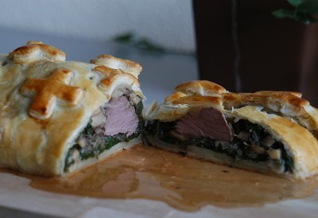

| Zutaten für 6 Personen: | |
| 850 g | Schlüsselriemen vom Kalb (falsches Filet) |
| Salz | |
| Pfeffer | |
| 2 El | Pflanzenölcrème |
| Kräuterduxelles: | |
| 2 | Schalotten |
| 250 g | weisse Champignons |
| 1 Bund | glattblättrige Petersilie |
| 1 | Rosmarinzweig |
| 10 g | Butter |
| 1/2 Bund | Basilikum |
| 200 g | Blattspinat |
| 500 g | Blätterteig |
| wenig | Mehl |
| 1 | Eigelb |
| 2 El | Milch |
| Weingelée: | |
| 2dl | trockener Weisswein |
| 3 El | trockener Sherry |
| 1 Beutel | Sulze Gelée, à 12.5 g |
Für das Weingelée Wein und Sherry aufkochen. Sulze Gelée unter Rühren einstreuen und die Pfanne von der heissen Herdplatte ziehen. In eine flache, kalt ausgespülte Porzellanform giessen und im Kühlschrank fest werden lassen.
Das Fleisch würzen. In einer Bratpfanne die Pflanzenölcrème erhitzen. Jetzt das Fleisch rundum anbraten, herausnehmen und zugedeckt beiseite stellen. Dann die Bratpfanne für die Duxelles weiter verwenden.
Für die Kräuterduxelles die Schalotten fein hacken. Die Champignons fein würfeln. Die Petersilie und den Rosmarin ebenfalls fein hacken. Die Butter in der Bratpfanne warm werden und zergehen lassen. Schalotten darin glasig dünsten. Champignons beifügen und so lange braten, bis alle Flüssigkeit verdampft ist.
Dann die Kräuter beifügen und die Duxelles mit Salz und Pfeffer abschmecken. Auskühlen lassen.
Dann erst den Basilikum mit der Schere direkt dazu schneiden. Basilikum verträgt das Hacken und das Mitkochen nicht - er verliert das feine Aroma und wird schwarz.
Den Blattspinat in reichlich siedendem Salzwasser kurz blanchieren. In Eiswasser abschrecken. Auf einem sauberen Küchentuch Blatt um Blatt überlappend zu einem Rechteck (35 x 28 Zentimeter) auslegen.
Gut die Hälfte der Duxelles im mittleren Teil des Spinates verteilen. Das Fleisch in die Mitte setzen. und mit der restlichen Duxelles bedecken
Mit Hilfe des Tuches in den Spinat wickeln, dabei die Tuch-Enden fest zusammen drehen, um die Blätter fest an das Fleisch zu pressen
Das Küchentuch vorsichtig entfernen. Den Backofen auf 200°C vorheizen.
Den Blätterteig auf wenig Mehl zu einem Rechteck (42 x 35 Zentimeter) auswallen, das Fleisch in die Mitte setzen. Im Teig einwickeln. Mit der Naht nach unten auf ein mit Backpapier belegtes Blech setzen. Ein Dampfloch ausstechen.
Eigelb und Milch verquirlen. Den Teig damit bestreichen. Im unteren Teil des heissen Ofens 30 Minuten backen.
Vor dem Aufschneiden fünf Minuten stehen lassen. Das Weingelée in Würfel schneiden und zum Fleisch servieren.
Dazu passen gedämpfte Spargeln oder Kefen.
Verwenden Sie allfällige Teigreste, um das Teigpaket zu verzieren.
Anstelle des Schlüsselriemens können Sie auch ein Kalbsfilet (ca. 600 g) verwenden. Schlagen Sie das dünnere Ende - den Filetspitz - ein, damit das Filet in der ganzen Länge gleich dick wird.
Ein Schweinsfilet können sie auf die gleiche Art zubereiten. Auch hier den dünnen Filetspitz einschlagen. Die Kräuterduxelles reicht für zwei Schweinsfilets.
Die Kerntemperatur des Fleisches mit dem Bratenthermometer messen: Sie soll ungefähr 80°C sein.
Den Spinat können Sie selbstverständlich auch mit Sauerampfer und Brennesseln mischen.
Für ein Filet Wellington: rund ein Kilogramm Rindsfilet von Mittelstück verwenden. Mit einer Farce (anstelle der Duxelles) aus einer kleinen, gedünsteten Zwiebel, gehackter Petersilie und Kerbel, 150 Gramm fein gewürfelten Champignons, 100 Gramm fein gehacktem Schinken und Kalbsleber (oder Leberpastete), 100 Gramm Kalbsbrät und zwei Esslöffeln Madeira bestreichen.
Brückenbauer Nr 19 vom 10. Mai 1995 Seite 8 und 9.
Für den Aufwand hätte ich ein besseres Ergebnis erwartet. Es schmeckte OK war aber nicht der Renner. Wir waren über die Glibber-Sülze etwas befremdet. Die gelang und hat das Aroma des Cognac (den ich für den Sherry substituiert hatte) schön aufgenommen. Aber wer isst so etwas heute denn noch? RE 2.8.2009